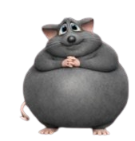

Oi, meu amor… 💗
se você entrou aqui, talvez o mundo tenha ficado silencioso demais.
Mas agora eu tô aqui com você. Você nunca está sozinha.
Falar comigo 🐭
Estou triste 😞
Não consigo dormir 🌙
Só queria você aqui 🤍
Jogar com o rato 🎮